조경기사 (2013-06-02 기출문제)
1과목: 조경사
1. 프레드릭 로 옴스테드(Frederic Law Olmsted)의 설계작품이 아닌 것은?
- 프로스펙트 파크
- 센트럴 파크
- 레드번(Radburn)
- 프랭클린 파크
(정답률: 85%)

2. 궁궐 정전 건축물의 기단을 뜻하는 것은?
- 월대
- 풍기대
- 서총대
- 사대
(정답률: 67%)
3. 조선시대를 대표하는 정원유적물의 조성순서로 바르게 나열한 것은?
- 소쇄원 → 서석지 → 부용동정원 → 다산초당 → 소한정
- 소쇄원 → 부용동정원 → 서석지 → 다산초당 → 소한정
- 소쇄원 → 다산초당 → 서석지 → 부용동정원 → 소한정
- 소쇄원 → 부용동정원 → 다산초당 → 서석지 → 소한정
(정답률: 59%)
4. 항주의 봉황산을 묘사한 축경 정원은?
- 북위(北魏)의 화림원(華林園)
- 당나라의 대명궁원(大明宮苑)
- 북송(北宋)의 만세산 정원
- 수양제(隋煬帝)가 조영한 서원(西苑)에 있는 북해정원
(정답률: 73%)
5. 다음 중 고구려 안학궁원(安鶴宮苑)의 설명으로 옳은 것은?
- 수구분은 동쪽과 서쪽에 설치되어 있었다.
- 궁의 북서쪽 모서리에 태자국이 있었다.
- 정원터는 서문과 외전 사이에 북문과 침전 사이에 있었다.
- 가장 큰 규모의 정원터는 동문과 내전 사이이다.
(정답률: 68%)
6. 다음 중 한국 전통정원에 사용되어진 구조물에 해당되지 않는 것은?
- 괴석(怪石)과 세심석(洗心石)
- 장식용 굴뚝(煙突)
- 돈대(墩坮)
- 수세분(手洗盆)
(정답률: 64%)
7. 강릉 선교장에는 주택 전면부에 방지방도가 조성되어 있다. 이 연못에 있는 정자의 명칭은?
- 활래정
- 농산정
- 부용정
- 하엽정
(정답률: 77%)
8. 귤준망의 작정기(作庭記)에 대한 설명으로 옳지 않은 것은?
- 현존하는 일본 최초의 조원 지침서이다.
- 침전조 건물에 어울리는 조원법을 기록하였다.
- 정원 전체의 땅가름, 연못, 섬 등 정원에 관한 모든 내용을 기록하였다.
- 아스카(비조) 시대 일본 조경의 개념형성에 큰 영향을 미쳤다.
(정답률: 69%)
9. 석가산의 조영에 관한 내용의 기록과 관계 없는 것은?
- 강희맹 - 가산찬(假山贊)
- 서거정 - 가산기(假山記)
- 정약용 - 다산화사이십수(茶山花史二十首)
- 이규보 - 사륜정기(四輪亭記)
(정답률: 71%)
10. 조지 런던과 헨리 와이즈의 협력작품으로, 설계는 방사형의 소로와 중심축선의 강조를 통한 바로크적인 새로운 지면분활의 방식을 취하면서 프랑스 왕궁과 경쟁한 저명한 영국의 정원은?
- 스토우원
- 햄프턴 코트
- 에르메농빌르
- 말메종
(정답률: 72%)
11. 보르 비 꽁트(Vaux-le-Viconte)에 사용된 중요한 조경기법이 아닌 것은?
- 장식화단
- 가산(假山 : mound)
- 다양한 형태의 소로(allee)
- 주축선에 의한 비스타(vista) 조성
(정답률: 73%)
12. 다음 [보기]의 설명에 해당하는 빌라는?
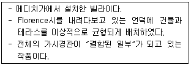
- Villa Farnese
- Villa Madama
- Villa Careggi
- Villa Lante
(정답률: 60%)
13. 「동양정원론」을 간행하여 중국정원을 영국에 소개하고 풍경식 정원에 중국취미를 받아들일 것을 제안한 사람은?
- 윌리암 챔버
- 브릿지맨
- 켄트
- 브라운
(정답률: 79%)
14. 미국에서 1872년 최초의 국립공원으로 지정된 공원은?
- 센트럴 파크(Central Park)
- 보스턴 파크(Boston Park)
- 옐로우스톤 파크(Yellowstone Park)
- 요세미티 파크(Yosemite Park)
(정답률: 83%)
15. 영국 풍경식 조경에 미친 영향으로 볼 수 없는 것은?
- 동양문화의 영향
- 풍경화의 낭만주의 문학
- 기후, 지형, 식생 등 자연환경
- 직선적인 건축물과의 조화와 균형
(정답률: 78%)
16. 경복궁 경회루(慶會樓)와 관련된 설명으로 잘못된 것은?
- 바깥기둥 36개는 단면이 원형이며 이는 양(陽)과 하늘을 상징한다.
- 경회루는 36간(間)으로 주역의 36궁(宮)을 상징한다.
- 경회루 주변에 불가사리 등 동물조각이 배치된 것은 화마(火魔)를 막기 위한 것이다.
- 태조 때 이미 작은 누각이 있었으나 태종 때 크게 지었다.
(정답률: 55%)
17. 다음 설명 중 「도산서원」과 가장 거리가 먼 것은?
- 사산오대(四山五臺)
- 연(蓮)을 식재한 애련설(愛蓮說)
- 매(梅), 죽(竹), 송(松), 국(菊)
- 정우당(淨友堂)과 몽천(蒙泉)을 축조
(정답률: 61%)
18. 담양의 소쇄원 초입에 '대봉대(臺鳳待)'라는 초정(草亭)을 짓고 오동나무와 대나무를 심었는데, 이 구성이 의미하는 바에 가장 적합한 설명은?
- 친한 친구를 기쁘게 맞이한다는 뜻으로 조성
- 태평성대를 희구하는 뜻으로 조성
- 선비 또는 신하의 지조를 담는 뜻으로 조성
- 자연의 순응하는 선비관을 표현하도록 조성
(정답률: 68%)
19. 「일본서기」 에 추고천황(推古天皇) 20년(612 A.D)에 들어가 수미산과 오교수법을 전하였다고 기록된 사람은?
- 몽창국사
- 노자공(路子工)
- 소아씨(蘇我氏)
- 도선선사
(정답률: 79%)
20. 19C 풍경식 조경에 있어 식물생태학과 식물지리학 등 자연과학적 지식을 기초로 한 자연경관의 복구를 가장 먼저 시도한 나라는?
- 미국
- 독일
- 영국
- 프랑스
(정답률: 70%)
2과목: 조경계획
21. 단지 계획시 건폐율의 설명으로 옳은 것은?
- 건축물의 각층의 바닥면적의 합계
- 대지면적에 대한 건축연면적의 비율
- 객실면적 합계의 건축연면적에 대한 비율
- 대지면적에 대한 건축면적의 비율
(정답률: 69%)
22. 관광계획에서 수요예측방법시 해수용장의 육지부 시설 규모를 산정하기 위해 적용해야 할 공간 단위로 가장 적합한 것은?
- 2~5m2/인
- 5~10m2/인
- 10~20m2/인
- 50~100m2/인
(정답률: 43%)
23. 쿨데삭(cul-de-sac)형 가로의 특징으로 적당하지 않은 것은?
- 보차도 분리에 의하여 보행자 전용 도로를 설치할 수 있다.
- 통과 교통을 금지하여 거주성과 프라이버시가 좋다.
- 쓰레기 처리 등 서비스 동선이 좋다.
- 가로의 끝에는 차량이 회전할 수 있는 시설이 필요하다.
(정답률: 70%)
24. 구체적인 기본계획의 단계를 가장 적절하게 설명하고 있는 것은?
- 공간의 수요량을 산정하여 대안을 작성한다.
- 부문별 계획으로 나누어 진행하고 이를 종합하여 최종계획안을 작성한다.
- 시설물제작을 위한 도면을 작성한다.
- 현장의 여건에 적합하도록 도면을 수정 및 재작성 한다.
(정답률: 59%)
25. 자연공원법상 국립공원내의 지정된 장소 밖에서 야영행위를 한 사람에 대한 과태료 기준은?
- 200만원 이하
- 100만원 이하
- 50만원 이하
- 10만원 이하
(정답률: 56%)
26. 범람원(flood plain)의 개발 특성과 가장 관련이 깊은 것은?
- 지하수위가 비교적 낮아서 개발이 용이하다.
- 지하암반이 높게 형성되어 토지의 굴착이 어렵다.
- 자갈층이 두텁게 충적되어 골재의 이용도가 높다.
- 표토의 유기질 함량도가 높다.
(정답률: 62%)
27. K.Lynch의 도시 이미지 형성 요소의 연결이 바르지 못한 것은?
- 통로 - 중로
- 모서리 - 63빌딩
- 지역 - 명동
- 랜드카크 - 남대문
(정답률: 80%)
28. 도시인구예측모델을 비요소모형과 요소모형으로 구분할 때, 다음 중 비요소모형에 해당하지 않는 것은?
- 지수성장모형
- 곰페르츠모형
- 로지스틱모형
- 연령집단생잔모형
(정답률: 61%)
29. 조경계획 분야에서 특히 중요한 지리정보체계(GIS)에 대한 설명 중 틀린 것은?
- 도면 중첩기능이 특히 뛰어나다.
- 삼차원 지형처리를 통하여 경사도, 가시권 분석 등이 가능하다.
- GIS는 Geographic Information System의 약자이다.
- CAD가 주로 그래픽자료를 처리하는 반면 지리정보체계는 속성자료만 처리하는 점이 가장 큰 차이점이다.
(정답률: 75%)
30. 경관의 미적반응을 측정하기 위한 척도의 유형과 그 예를 잘못 연결한 것은?
- 명목척 - 운동선수의 등번호
- 순서척 - 리커트 척도(Likert scale)
- 등간척 - 어의구별척도(sementic differential scale)
- 비례척 - 부피
(정답률: 68%)
31. 체육시설업의 종류에 따른 필수 운동시설 기준으로 틀린 것은?(단, 체육시설의 설치ㆍ이용에 관한 법률 시행규칙을 적용한다.)
- 골프장업 : 회원제 골프장업은 3홀 이상, 정규 대중골프장업은 18홀 이상, 일반 대중골프장업은 9홀 이상 18홀 미만, 간이 골프장업은 3홀 이상 9홀 미만의 골프코스를 갖추어야 한다.
- 수영장업 : 물의 깊이는 0.9미터 이상 2.7미터 이하로 하고, 수영조의 벽면에 일정한 거리 및 수심 표시를 하여야 한다.
- 스키장업 : 평균 경사도가 10도 이하인 초보자용 슬로프를 2면 이상 설치하여야 한다.
- 승마장업 : 실내 또는 실외 마장면적은 500제곱미터 이상이어야 하고, 실외 마장은 0.8미터 이상의 목책을 설치하여야 한다.
(정답률: 49%)
32. 만약 어떤 사람이 공원에 가서 잔디밭에 앉으려고 돗자리를 깔았다면 돗자리에 의해 새로이 만들어진 공간은 공간한정 요소 중 어느 것에 속하는가?
- 바닥면
- 벽면
- 천정면
- 관개면
(정답률: 77%)
33. 국토의 계획 및 이용에 관한 법률상 용도지역에 해당하는 녹지지역의 건폐율과 용적률 범위 기준으로 맞는 것은?
- 건폐율 : 20퍼센트 이하, 용적율 : 100퍼센트 이하
- 건폐율 : 30퍼센트 이하, 용적율 : 300퍼센트 이하
- 건폐율 : 10퍼센트 이하, 용적율 : 100퍼센트 이하
- 건폐율 : 40퍼센트 이하, 용적율 : 400퍼센트 이하
(정답률: 64%)
34. 도시ㆍ군계획시설의 결정ㆍ구조 및 설치기준에 관한 규칙에서 정하고 있는 용도지역별 도로율 기준으로 틀린 것은?(관련 규정 개정전 문제로 여기서는 기존 정답인 2번을 누르면 정답 처리됩니다. 자세한 내용은 해설을 참고하세요.)
- 주거지역 : 20퍼센트 이상 30퍼센트 미만
- 녹지지역 : 5퍼센트 이상 15퍼센트 미만
- 상업지역 : 25퍼센트 이상 35퍼센트 미만
- 공업지역 : 10퍼센트 이상 20퍼센트 미만
(정답률: 76%)
35. 공장조경 식재계획시의 원칙으로 가장 부적합한 것은?
- 수종의 선정에 기능식재를 중시한 원칙을 수용한다.
- 식재방법은 자연환경과 주변의 지역적, 도시적 여건을 고려한 인문환경을 존중한다.
- 녹화용 수목의 경우 이식이 용이하며 성장속도가 빠르고, 병충해가 적어 관리가 용이한 수종을 선택하는 것이 유리하다.
- 공장의 차폐 및 은폐 등의 부분적인 식재가 공장경관을 창출하는 종합적인 식재보다 중요하다.
(정답률: 73%)
36. 여가활동을 증가시키고 있는 요소 중 가장 관계가 적은 것은?
- 인간서비스 및 사회복지의 확충
- 교육수준의 향상
- 소득의 증대
- 맞벌이 가정의 증가
(정답률: 73%)
37. 다음 중 경관분석의 기법에 해당하지 않는 것은?
- 기호화 방법
- 군락측도 방법
- 메시(mash)에 의한 방법
- 게슈탈트(gestalt)에 의한 방법
(정답률: 65%)
38. 단지조성사업 등으로 설치되는 노외주차장에는 경형자동차를 위한 전용주차구획을 대통령령으로 정하는 비율에 따라 설치하여야 한다. 여기서 “대통령령으로 정하는 비율” 이란 노외주차장 총주차대수의 몇 퍼센트를 말하는가?
- 2
- 3
- 5
- 8
(정답률: 49%)
39. 버라인(Berlyne)이 설명한 미적 반응의 순서로 맞는 것은?
- 자극선택 → 자극 → 자극탐구 → 자극해석 → 반응
- 자극 → 자극선택 → 자극탐구 → 자극해석 → 반응
- 자극 → 자극탐구 → 자극선택 → 자극해석 → 반응
- 자극선택 → 자극 → 자극해석 → 자극탐색 → 반응
(정답률: 67%)
40. 다음 중 도시공원 및 녹지 등에 관한 법률에서 분류하는 「주제공원」 에 해당되지 않는 것은?
- 역사공원
- 체육공원
- 해안공원
- 묘지공원
(정답률: 70%)
3과목: 조경설계
41. 현상학적 입장의 경관분석기법에 속하지 않는 것은?
- 분류법
- 개방적 인터뷰
- 전문가의 경험적 고찰
- 경관요소의 계량적 분석
(정답률: 30%)
42. 주택건설기준 등에 관한 규정상 어린이놀이터의 설명 중 ( )안에 적합한 숫자는?(관련 규정 개정전 문제로 여기서는 기존 정답인 2번을 누르면 정답 처리됩니다. 자세한 내용은 해설을 참고하세요.)
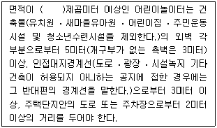
- 100
- 150
- 200
- 300
(정답률: 63%)
43. 그림과 같은 재료 단면의 경계 표시가 나타내는 것은?
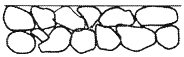
- 흙
- 바위
- 잡석
- 호박돌
(정답률: 66%)
44. 조경설계기준상의 쓰레기통 설치기준에 대한 설명으로 옳지 않은 것은?
- 매 단위공간 마다 배치할 필요는 없고, 단위공간 몇 개를 조합하여 그 중간에 1개소 설치한다.
- 내구성 있는 재질을 사용하거나 내구성 있는 표면마감방법으로 설계한다.
- 각 단위공간의 의자 등 휴게시설에 근접시키되, 보행에 방해가 되지 않도록 하고 수거하기 쉽게 배치한다.
- 설계대상공간의 휴게공간ㆍ운동공간ㆍ놀이공간ㆍ보행공간과 산책로 등 보행동선의 결절점, 관리사무소, 상점 등의 건물과 같이 이용량이 많은 지점의 직접 위치에 배치한다.
(정답률: 71%)
45. 해링의 반대색설(4원색설)에서 색채지각의 기본이 되는 4가지 색의 상이 바르게 연결된 것은?
- 노랑 - 빨강, 검정 - 흰색
- 빨강 - 파랑, 노랑 - 녹색
- 빨강 - 녹색, 검정 - 흰색
- 노랑 - 파랑, 빨강 - 녹색
(정답률: 54%)
46. 다음 중 자연석의 단면 표시로 옳은 것은?
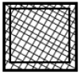
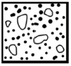
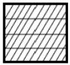
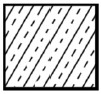
(정답률: 46%)
47. 다음 중 반지름 치수 기입 방법으로 옳은 것은?
- 반지름 치수는 증상을 반드시 표시하여 기입해야 한다.
- 반지름 치수를 표시할 때에는 치수선의 양쪽에 화살표를 모두 붙인다.
- 화살표나 치수를 기입할 여유가 없을 경우에는 중심방향으로 치수선을 연장하여 긋고 화살표를 붙인다.
- 반지름이 커서 그 중심 위치까지 치수선을 그을 수 없을 때에는, 자유 실선을 원호 쪽에 사용하여 치수를 표기 한다.
(정답률: 52%)
48. 단위놀이시설로서 모래밭의 깊이는 놀이의 안전을 고려하여 얼마 이상으로 설계하는가?
- 10㎝
- 15㎝
- 20㎝
- 30㎝
(정답률: 57%)
49. 경관생태학에서는 토지를 바탕(matrix), 조각(patch), 통로(corridor)의 3가지 경관요소로 구분하여 설명하고 있다. 다음 중 경관바탕이 아닌 것은?
- 전체 토지면적의 반 이상을 덮고 있는 부분
- 구역의 경관 역동성을 좌우 하는 공간 부분
- 두 가지 특징이 한 구역에서 동등할 때 연결성이 높은 부분
- 서식처, 도관, 장애, 여과, 공급원, 수용처 등 기능을 갖는 부분
(정답률: 46%)
50. 어떤 색을 보고 난 후 다른 색을 볼 때 먼저 본 색의 영향으로 뒤에 본 색이 다르게 보이는 현상은?
- 계시대비
- 동시대비
- 면적대비
- 연변대비
(정답률: 64%)
51. 「주택건설기준 등에 관한 규정」에서 규정하고 있는 「기타 부대시설」에 해당하는 것은?
- 안내표지판
- 제2종 근린생활시설
- 주민공동시설
- 사회복지관
(정답률: 63%)
52. 축척 1/100의 도면을 축척 1/300의 도면으로 만들고자 한다. 축척 1/100에서 크기 A를 갖는 도형은 축척 1/300에서 그 크기가 얼마나 되는가?
- 3A
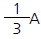
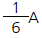
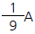
(정답률: 59%)
53. 다음 중 조적공사에서 치장줄눈용 모르타르 배합비는?
- 1:1
- 1:2
- 1:3
- 1:4
(정답률: 40%)
54. 다음의 경관요소 중 적은 인위적 변화에 대하여 가장 큰 시각적 영향을 받는 것은?
- 급경사지
- 논, 밭
- 삼림
- 초지
(정답률: 60%)
55. 다음 등각도를 3각법으로 투상할 때 평면도로 맞는 것은?
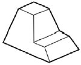
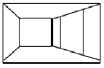
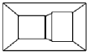
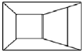
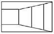
(정답률: 50%)
56. 조경설계에서 수경요소(waterscape)의 기능으로 효과가 가장 약한 것은?
- 공기 냉각기능
- 동선의 연결기능
- 소음 완충기능
- 레크레이션의 수단기능
(정답률: 65%)
57. 조경제도에서 대상물의 보이지 않는 부분을 표시하는데 사용하는 선의 종류는?
- 파선
- 1점 쇄선
- 2점 쇄선
- 가는 실선
(정답률: 73%)
58. 질감(texture)에 관한 설명으로 옳지 않은 것은?
- 모든 물체는 일정한 질감을 갖는다.
- 질감의 선택에서 중요한 것은 스케일, 빛의 반사와 흡수 등이다.
- 매끄러운 재료는 빛을 흡수하므로 무겁고 안정적인 느낌을 준다.
- 촉각 또는 시각으로 지각할 수 있는 어떤 물체의 표면상 특징을 말한다.
(정답률: 60%)
59. 설계연구(Allen & Yen, 1979)를 위하여서는 연구방법의 신뢰도와 타당성이 검증되어야 한다. 타당성(Validity)의 유형에 속하지 않는 것은?
- 개념의 타당성
- 예측의 타당성
- 논리의 타당성
- 내용의 타당성
(정답률: 44%)
60. 시방서 작성은 다음 중 어느 단계에서 이루어지는가?
- 종합단계
- 기본계획단계
- 기본설계단계
- 실시설계단계
(정답률: 65%)
4과목: 조경식재
61. 다음 중 배기가스에 강한 수목은?
- Cinnamomum camphora (L.) J.Presl
- Acer pictum subsp. mono (Maxim.) Ohashi
- Abies holophylla Maxim.
- Prunus sargentii Rehder
(정답률: 31%)
62. 다음 중 춘파한해살이 초화류에 해당하지 않는 것은?
- 채송화
- 메리골드
- 봉선화
- 구절초
(정답률: 51%)
63. 다음 [보기]의 설명에 가장 적합한 수종은?
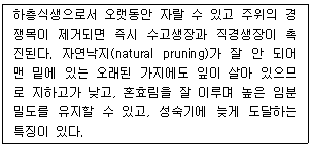
- Pinus densiflora Siebold & Zucc.
- Abies holophylla Maxim.
- Platanus orientalis L.
- Betula platyphylla var. japonica Hara
(정답률: 41%)
64. 소나무과 중에서 가을에 낙엽이 되는 속(genus)은?
- 소나무(Pinus)속
- 가문비나무(Picea)속
- 개잎갈나무(Cedrus)속
- 잎갈나무(Larix)속
(정답률: 43%)
65. 다음 중 후박나무의 학명으로 알맞은 것은?
- Magnolia liliiflora Desr.
- Magnolia obovata Thunb.
- Magnolia grandiflora L.
- Machilus thunbergii Siebold & Zucc.
(정답률: 61%)
66. 식재의 미적원리를 그림과 같이 표현하였다면, 이 그림이 나타내고 있는 디자인 원리에 가장 적합한 것은?
- 균형
- 대비
- 조화
- 리듬
(정답률: 73%)
67. 다음 중 Prunus yedoensis Matsum. 에 대한 설명으로 옳지 않은 것은?
- 열매는 구형의 핵과이다.
- 암술대에는 털이 있다.
- 잎 가장자리에는 예리한 이중거치가 있다.
- 일본원산으로 한국에는 일제강점기 때 도입되었다.
(정답률: 57%)
68. A와 B 지역을 조사한 결과 두 지역에 공통적으로 나타난 종이 12종, A 지역에는 출현하나 B 지역에는 출현하지 않은 종이 10종, B 지역에는 출현하나 A 지역에는 출현하지 않은 종이 8종인 경우 Jaccard coefficient를 이용하여 구한 두 지역의 community 유사도는?
- 2
- 4/5
- 4/10
- 4
(정답률: 49%)
69. 다음 중 화목류의 개화기가 옳지 않은 것은?
- Forsythia koreana Nakai : 3~4월
- Gardenia jasminoides Ellis : 6~7월
- Lagerstroemia indica L. : 5~6월
- Daphne odora Thunb. : 3~4월
(정답률: 47%)
70. '보도에서 1m정도 낮은 평면에 기하학적 모양으로 조성한 화단' 은 무엇인가?
- 기식화단
- 침상화단
- 리본화단
- 카펫화단
(정답률: 55%)
71. 다음 수목 중 가을에 황색의 열매가 달리는 것은?
- Rosa rugosa Thunb. var. rugosa
- Ilex integra Thunb.
- Ligustrum japonicum Thunb. var. japonicum
- Chaenomeles sinensis Koehne
(정답률: 31%)
72. 다음 중 배식설계시 섬세한 질감 가운데에 잎의 크기를 활용한 아주 강한 질감의 수목을 위치시켜 시선을 자극시키려 할 때 가장 적당한 수목은?
- Buxus koreana Nakai ex Chung & al.
- Juniperus chinensis var. sargentii A.Henry
- Ulmus parvifolia Jacq.
- Platanus orientalis L.
(정답률: 56%)
73. 산림 수종의 내음성 분류기준으로 옳은 것은?
- 극음수 : 전광의 10% 이하에서 생존가능
- 음 수 : 전광의 20~40% 이하에서 생존가능
- 양 수 : 전광의 30~60% 이하에서 생존가능
- 극양수 : 전광의 70% 이하에서 생존가능
(정답률: 44%)
74. 다음 중 우리나라가 원산지인 수종이 아닌 것은?
- Chionanthus retusus Lindl. & Paxton
- Robinia pseudoacacia L.
- Styrax japonicus Siebold & Zucc.
- Thuja orientalis L.
(정답률: 41%)
75. 우리나라의 주요 야생초화류 중 돌나물과에 해당하지 않는 것은?
- 섬기린초
- 바위채송화
- 꿩의 비름
- 까치수염
(정답률: 42%)
76. 감나무, 마가목, 옻나무, 낙우송, 백합나무, 칠엽수 등의 수종에서 나타나는 공통된 특징은?
- 가을철 단풍이 아름다운 수종들이다.
- 대기 정화 효과가 뛰어난 수종들이다.
- 열매가 아름다워도심지 가로수용으로 적합한 수종들이다.
- 추운 지방에 잘 견디는 내한성이 매우 강한 수종들이다.
(정답률: 55%)
77. 다음 식물 중 같은 과(科)에 해당하지 않는 것은?
- Alnus sibirica Fisch. ex Turcz.
- Betula platyphylla var. japonica Hara
- Carpinus cordata Blume
- Castanea crenata Siebold & Zucc.
(정답률: 29%)
78. 다음 중 생태공원에서 야생조류를 유도하기 위한 식이식물로 적합하지 않은 것은?
- Ligustrum obtusifolium
- Callicarpa japonica
- Rhododendron macranthum
- Sorbus alnifolia
(정답률: 40%)
79. Camellia japonica L. 과 관련된 설명으로 옳지 않은 것은?
- 꽃은 백색이고, 꽃잎은 한 장씩 떨어진다.
- 염분의 해를 잘 받지 아니한다.
- 우리나라에는 난온대 기후대인 남해안과 제주도에 자생한다.
- 기부에서 갈라져 관목상으로 되는 것이 많으며 나무껍질은 회갈색이고, 평활하며 일년생가지는 갈색이다.
(정답률: 61%)
80. 다음 중 이가화(二家花) 또는 자웅이주(雌雄異株)에 해당하지 않는 수종은?
- Chaenomeles speciosa
- Ginkgo biloba
- Lindera obtusiloba
- Actinidia arguta
(정답률: 21%)
5과목: 조경시공구조학
81. 다음 중 빛과 관련된 용어 설명이 옳은 것은?
- 광속 : 광원의 세기를 표시하는 단위
- 광도 : 방사에너지 시간에 대한 비율
- 조도 : 단위 면에 수직으로 투하된 광속밀도
- 휘도 : 빛의 세기를 표시하는 단위
(정답률: 68%)
82. 그림과 같은 보에서 지점 A에서의 반력이 0이 되려면 P는 몇 kN인가?
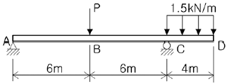
- 1
- 2
- 3
- 4
(정답률: 35%)
83. 다음 중 차량의 속도구분에 있어 임계속도(臨界速度)에 해당하는 설명은?
- 일정한 구간의 거리를 주행한 시간으로 나누어 구한 속도이다.
- 특정 지점을 통과할 때의 순간적인 속도이다.
- 도로조건만을 감안한 최고속도로서 도로의 기하학적 설계의 기준이 된다.
- 교통 용량이 최대가 되는 속도로서 이론적으로 교통용량을 산정할 때 쓰인다.
(정답률: 53%)
84. 시험재의 전건무게가 1,000g이고, 건조 전에 시험재의 무게가 1,300g일 때 건량기준 함수율은 얼마인가?
- 20%
- 25%
- 30%
- 35%
(정답률: 69%)
85. 90m의 측선을 10m 줄자를 관측하였다. 이 때 1회의 관측에 +5㎜의 누적오차와 ±5㎜의 우연오차가 있다면 실제 거리로 옳은 것은?
- 90.045±0.015m
- 90.45±0.15m
- 90±0.015m
- 90±0.15m
(정답률: 55%)
86. 주로 노반 또는 기초의 두께 결정, 가소성포장의 단면설계 목적으로 자연지반의 성질을 파악하는 시험은?
- 평판재하시험
- CBR시험
- vane 전단시험
- cone penetration 시험
(정답률: 51%)
87. 일반 콘크리트의 다지기에 대한 설명으로 옳지 않은 것은?
- 내부진동기는 콘크리트로부터 천천히 빼내어 구멍이 남지 않도록 하여야 한다.
- 재진동을 할 경우에는 콘크리트에 나쁜 영향이 생기지 않도록 초결이 일어난 후에 실시하여야 한다.
- 진동다지기를 할 때에는 내부진동기를 하층의 콘크리트 속으로 0.1m 정도 찔러 넣어야 한다.
- 콘크리트는 타설 직후 바로 충분히 다져서 콘크리트가 철근 및 매설물 등의 주위와 거푸집의 구석구석까지 잘 채워져 밀실한 콘크리트가 되도록 한다.
(정답률: 64%)
88. 콘크리트 내구성에 영향을 주는 아래 화학반응식의 현상은?
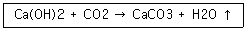
- 콘크리트 염해
- 동결융해현상
- 알칼리 골재반응
- 콘크리트 중성화
(정답률: 45%)
89. 콘크리트의 신축이음에 대한 설명 중 틀린 것은?
- 신축이음에는 필요에 따라 이음재, 지수판 등을 배치하여야 한다.
- 신축이음은 양쪽의 구조물 혹은 부재가 구속된 구조이어야 한다.
- 신축이음의 단차를 피할 필요가 있는 경우에는 장부나 홈을 두는 것이 좋다.
- 신축이음의 단차를 피할 필요가 있는 경우에는 전단 연결재를 사용하는 것이 좋다.
(정답률: 48%)
90. 건축시공 중 발생하는 발생재의 처리에 대한 설명으로 옳지 않은 것은?
- 발생재 공제시 적용단가는 현장거래가격을 기준으로 한다.
- 철재시설에서 발생하는 고철재는 70%를 공제한다.
- 발생재의 대금을 설계 당시 미리 공제한다.
- 공제금액의 계산은 (발생량/공제율)×고재단가로 한다.
(정답률: 39%)
91. 다음은 가상지형에 대한 직접수준측량치를 나타낸 그림이다. A와 B 지점의 표고차는? (단, 이때 B.M.은 5m이다.)
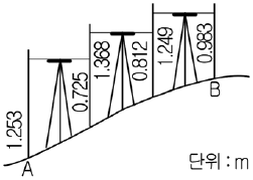
- 1.350m
- 6.350m
- 3.650m
- 8.650m
(정답률: 48%)
92. 다음 중 석재의 종류별 특징에 대한 설명으로 옳지 않은 것은?
- 화강암은 강도가 뛰어나고 구조용으로 적합하다.
- 대리석은 내산성이 약하여 실외공간에는 적합하지 않다.
- 응회암은 비중이 커서 조경석으로 가장 많이 사용된다.
- 안산암은 내화성이 크고 강도와 내구성이 크다.
(정답률: 46%)
93. 석재 1m3를 100m 거리에 리어카를 사용하여 소운반하려 할 때 운반비는 약 얼마인가?(단, V : 3000m/hr, 리어카 1회 운반량 : 250㎏, 석재 : 1700㎏/m3, 2인1조 실작업시간 : 450분, 노임 : 20000원, 석재류 적재ㆍ적하시간 : 5분)
- 3922원
- 5442원
- 6729원
- 7095원
(정답률: 42%)
94. 콘크리트 포장과 비교했을 때 아스팔트 포장의 장점이 아닌 것은?
- 마찰저항이 작다.
- 소음이 적다.
- 파손시 보수가 용이하다.
- 공사비가 저렴하다.
(정답률: 52%)
95. 건설공사표준 품셈을 적용한 설계서 및 공사관련 일위대가표의 금액산정에 적용되는 단위표준으로 적합하지 않은 것은?(오류 신고가 접수된 문제입니다. 반드시 정답과 해설을 확인하시기 바랍니다.)
- 설계서의 금액란은 1원 미만은 버린다.
- 설계서의 소계는 10원 미만은 버린다.
- 일위대가표의 금액란은 0.1원 미만은 버린다.
- 설계서의 총액이 10,000원 이하의 공사는 100원 이하는 버린다.
(정답률: 47%)
96. 거푸집 등의 형상에 순응하여 채우기 쉽고, 분리가 일어나지 않은 성질, 거푸집에 잘 채워질 수 있는지의 난이도정도 재료의 분리에 저항하는 정도를 나타내는 용어는?
- 콘시스텐시(consistency)
- 펌퍼빌리티(pumpability)
- 플라스티시티(plasticity)
- 모빌리티(mobility)
(정답률: 47%)
97. 다음 중 모멘트(moment)에 대한 설명으로 옳은 것은?
- 작용점과 방위와 방향을 말한다.
- 구조물에 하중이 작용할 때의 지점의 반력을 말한다.
- 힘의 한 점에 대한 회전능률을 말한다.
- 힘의 압축력을 말한다.
(정답률: 61%)
98. TQC를 위한 7가지 도구 중 다음 설명이 의미하는 것은?
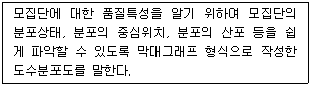
- 특성요인도
- 히스토그램
- 체크시트
- 파레토도
(정답률: 62%)
99. 생태복원공사에 사용되는 비점오염 저감시설에 대한 설명으로 옳지 않은 것은?
- 저류지는 농경배수지, 산업단지 등으로서 홍수유량의 조절이 가능한 형태의 저수지이다.
- 인공습지는 경관적으로도 활용되며 자연습지의 원리를 이용하여 오염된 물을 저류한다.
- 식생여과대는 협소한 침투성 높은 토양지역에 도랑을 판 후 자갈, 모래 등을 채우는 시설이다.
- 장치형 시설은 도시지역, 도로 등에 사용되며 시설부지가 적은 지역에서 정화시설물을 이용한다.
(정답률: 43%)
100. 기업의 유지를 위한 관리활동 부문에서 발생하는 제비용을 무엇이라고 하는가?
- 일반관리비
- 기업유지비
- 기업관리비
- 공사관리비
(정답률: 50%)
6과목: 조경관리론
101. 옥외 레크리에이션의 관리체계 중 서비스 관리체계에 영향을 주는 외적환경 인자가 아닌 것은?
- 관리자의 목표
- 전문가적 능력
- 이용자 태도
- 공중 안전
(정답률: 39%)
102. 배수시설의 관리에 의한 효용이 아닌 것은?
- 강우 및 강설량의 조절
- 유속 및 유량감소로 토양침식방지
- 토양의 포화상태를 감소시켜 지내력 확보
- 해충의 번식원인이 될 수 있는 고여 있는 물을 제거
(정답률: 63%)
103. 수목 이식 후 쇠약해진 나무의 줄기를 새끼, 천 등으로 감아 주는 목적에 해당되지 않는 것은?
- 나무의 수분 증산을 억제한다.
- 강한 햇빛을 받아 껍질이 타는 것을 방지한다.
- 나무의 가지 성장을 번성하게 하여 수체형성을 아름답게 하기 위해서이다.
- 쇠약해진 나무에 병해충 침입을 방지한다.
(정답률: 74%)
104. 다음 중 알라타체에 대한 설명으로 옳은 것은?
- 휴면타파의 기능을 한다.
- 변태조절 호르몬을 분비한다.
- 앞가슴에 있는 내분비샘이다.
- 노숙세포에 특히 많다.
(정답률: 50%)
1⑤. 주로 뿌리에 병을 일으키는 곰팡이는?
- Septoria spp.
- Uncinula spp.
- Verticillium spp.
- Colletotrichum spp.
(정답률: 54%)
106. 정지ㆍ전정의 일반적 원칙이 아닌 것은?
- 하나의 주지보다는 주지와 경합하는 가지를 다수키운다.
- 무성하게 자란 가지는 제거한다.
- 지나치게 길게 자란 가지는 제거한다.
- 평행지는 만들지 않는다.
(정답률: 66%)
107. 수용능력(carrying capacity) 개념은 원래 어느 분야에서 비롯되었는가?
- 생태계 관리분야
- 환경 계획분야
- 환경 심리분야
- 레크리에이션 분야
(정답률: 52%)
108. 다음 중 토양수분포텐샬(soil water potential)의 단위가 아닌 것은?
- pF
- %
- bar
- kPa
(정답률: 64%)
109. 다음 중 네트워크공정표의 특징이 아닌 것은?
- 대형공사에서는 세부를 표현할 수 없다.
- 중점관리를 할 수 있다.
- 작성과 수정이 힘들다.
- 작업간의 관계가 명확하다.
(정답률: 63%)
110. 소나무류의 순꺾기 시기로 가장 적합한 것은?
- 2~3월
- 4~5월
- 6~7월
- 8~9월
(정답률: 52%)
111. 병에 걸린 생물체로부터 분리한 미생물이 그 병의 원인이라고 인정을 받기 위해서는 4가지 조건을 충족시켜야 한다. 다음 중 코흐의 원칙 조건에 해당하지 않은 것은?
- 병든 생물에 병원체로 의심되는 특정 미생물이 존재해야 한다.
- 특정 미생물은 기주생물로부터 분리되고 배지에서 순수 배양되어야 한다.
- 순수배양한 미생물을 동일 기주에 접종하였을 때 동일한 병이 발생하여야 한다.
- 병든 생물체로부터 접종할 때 사용하였던 미생물과 동일한 특성의 미생물은 재분리 배양되어서는 아니된다.
(정답률: 65%)
112. 다음 토양에서 가장 유효도가 떨어지는 성분은?
- P
- N
- K
- Ca
(정답률: 44%)
113. 자연공원지역의 관리 중 이용자에 의한 손상관리의 단계를 기술한 것 중 옳지 않은 것은?
- 문제되는 조건(바람직하지 않은 이용자에 의한 손상)의 파악
- 바람직하지 않은 손상들의 발생과 정도에 영향을 주는 잠재적 요인의 결정
- 바람직하지 않은 조건들을 완화시킬 수 있는 관리전략의 선택
- 바람직하지 않은 손상을 막을 수 있는 이용객에 대한 활발한 교육실시
(정답률: 48%)
114. 잣나무 털녹병의 전염경로를 포자형으로 바르게 설명한 것은?
- 잣나무 하포자 → 송이풀 동포자 → 송이풀 하포자 → 잣나무에 침입
- 잣나무 담자포자(소생자) → 송이풀 하포자 → 송이풀 동포자 → 잣나무에 침입
- 잣나무 녹포자 → 송이풀 하포자 → 송이풀 녹포자 → 송이풀 동포자 → 잣나무에 침입
- 잣나무 녹포자 → 송이풀 하포자 → 송이풀 동포자 → 송이풀 담자포자(소생자) → 잣나무에 침입
(정답률: 39%)
115. 공원관리비 예산책정에 있어 작업 전체비용이 30,000,000원이고, 작업률이 3년에 1회일 때 단위연도의 예산은?
- 10,000,000원
- 30,000,000원
- 60,000,000원
- 90,000,000원
(정답률: 69%)
116. 살충제 가운데 물에 녹지 않는 농약원제를 활석이나 카우린 등 증량제와 계면활성제를 혼합하여 미세한 가루로 만든 제형은?
- 유제(emulsifiable concentrate)
- 분제(dust)
- 수화제(wettable powder)
- 수용제(soluble powder)
(정답률: 34%)
117. 공정관리의 기본적인 기능은 계획기능과 통제기능으로 나눌 수 있다. 다음 중 통제기능이 아닌 것은?
- 진도관리 - 공정진척의 계획과 실시와의 비교
- 사용계획 - 재료, 노무, 기계설비, 자금 등의 소요시기, 품목, 수량 및 수송
- 조달관리 - 재료, 노동력, 기계 자금 등의 조달
- 시정조치 - 작업내용의 개선, 공정진척, 계획의 재검토
(정답률: 56%)
118. 양버즘나무를 가해하는 버즘나무방패벌레의 월동 충태와 장소로 옳은 것은?
- 알 - 수피 틈
- 유충 - 지피물 속
- 번데기 - 흙 속
- 성충 - 수피 틈
(정답률: 50%)
119. 광엽잡초와 화본과잡초의 분류로 옳은 것은?
- 광엽잡초 - 돌피
- 광엽잡초 - 명아주
- 화본과잡초 - 여뀌
- 광엽잡초 - 바랭이
(정답률: 48%)
120. 잔디밭의 뗏밥(肥土)주기와 관련하여 가장 옳은 것은?
- 5년마다 1회 정도 실시한다.
- 시기에 있어서 이른 봄 발아 전에 실시한다.
- 두께는 40㎜ 정도로 한다.
- 뗏밥에 타비료 혼합을 금지한다.
(정답률: 53%)